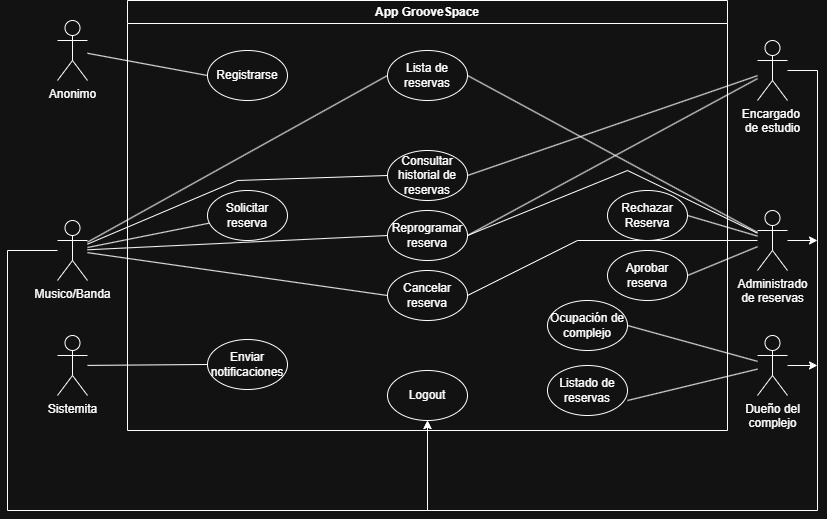

sistema gestion de salas:
Bienvenido al sistema de gestión de salas de GrooveSpace.esto es relleno.

donde nos ubicamos?
conoce nuestras salas
El siguiente texto lo pongo de place holder para testear el footer y header,ignorar
El complejo de salas de ensayo "GrooveSpace", ubicado en el polo cultural de la ciudad, necesita una aplicación web para automatizar la gestión de reservas de salas, el control del alquiler de equipamiento y la administración de las bandas de música. El objetivo principal es optimizar el uso de los espacios acústicos y mejorar la experiencia de los músicos, permitiéndoles asegurar un lugar para sus prácticas de manera rápida y sin depender de la recepción. El sistema se centrará en la autogestión de la banda y operará como la plataforma digital exclusiva del complejo para modernizar sus procesos diarios. Con la aplicación, un músico, después de autenticarse, podrá iniciar una nueva reserva, seleccionando la sala de ensayo de su preferencia (como Sala Standard, Sala Premium o Sala de Batería) y los horarios. El sistema le mostrará las horas disponibles en tiempo real y le permitirá confirmar el turno. Una vez confirmado, el sistema le mostrará en pantalla un pase digital con el detalle del horario y el equipamiento incluido. El músico también podrá consultar su historial de ensayos, que incluirá las horas consumidas, reservas futuras y la posibilidad de cancelar un turno con anticipación si se suspende la práctica para no perder la seña abonada. Dentro del complejo, el encargado del estudio podrá ver en tiempo real todas las reservas de salas entrantes ordenadas por horario. Podrá marcar una sala como "En uso", "Liberada" o "En mantenimiento", y enviar notificaciones visuales en el sistema si hay demoras porque una banda anterior no desocupó a tiempo. El dueño del complejo necesitará un tablero de control unificado que consolide el estado de toda la ocupación de las salas y el alquiler de instrumentos extra, permitiendo ver de un vistazo qué salas son las más demandadas o qué equipos están ociosos. Esto elimina el proceso manual de anotar los turnos en una pizarra con marcador que muchas veces se borra por error o genera graves confusiones en la grilla. Actualmente, los músicos deben llamar por teléfono o enviar audios de WhatsApp al administrador para pedir una sala, lo que genera dobles reservas, superposiciones molestas en los horarios pico y bandas esperando en el pasillo con sus pesados instrumentos. Por ello, se necesita un módulo que permita al usuario ingresar su requerimiento y seleccionar horarios de manera cien por ciento digital. También se necesita la capacidad de generar un reporte de ocupación diaria en tiempo real para la administración del local. El sistema "GrooveSpace" deberá operar en un servidor web local desarrollado en Node.js. Es crucial que la aplicación tenga la capacidad de validar automáticamente que nadie reserve una sala en un horario que ya fue tomado por otra banda o por una cantidad de tiempo inválida, ya que la regla de negocio exige optimización estricta de la agenda para evitar conflictos entre músicos. El tiempo de respuesta del sistema para confirmar un turno no debe superar los 2 segundos, para evitar que el músico abandone la gestión y busque otro lugar. El complejo "GrooveSpace" necesita recibir diferentes versiones de la aplicación a lo largo del tiempo para evaluar la usabilidad de la grilla de horarios visual. El encargado también podrá conocer la disponibilidad total de amplificadores y platillos extra en una lista unificada. El músico, por su parte, verá un aviso destacado si la sala deseada está bloqueada por tareas de acondicionamiento acústico. El sistema "GrooveSpace" deberá activar un proceso que calcule automáticamente el costo extra si el usuario selecciona alquiler de instrumentos adicionales (ej. una guitarra o un pedal), sumándolo al costo base del turno antes de permitirle confirmar la reserva de la sala. El entorno de uso presenta un desafío particular: los músicos a menudo revisan o reservan sus turnos desde sus celulares dentro de recintos con iluminación muy tenue, pasillos oscuros o directamente arriba del escenario. Por lo tanto, el sistema requerirá que la interfaz móvil posea un "modo oscuro" estricto por defecto, con botones de reserva en colores de alto contraste (neón) para evitar deslumbramientos visuales y toques accidentales en la pantalla táctil bajo poca luz. Además, debido a la privacidad de los artistas y bandas reconocidas que frecuentan el lugar para grabar en secreto, el sistema no debe mostrar el nombre de la banda, los integrantes ni el estilo musical en los monitores públicos de la sala de espera, mostrando únicamente el número de sala y su estado (Libre/Ocupada), protegiendo así la privacidad de los proyectos musicales. El sistema requerirá que los usuarios, como el músico representante de la banda y el personal del estudio, presenten credenciales para iniciar sesión antes de acceder a cualquier funcionalidad de reserva. El sistema "GrooveSpace" deberá gestionar la persistencia de datos mediante archivos de texto estructurados en formato JSON (rooms.json, bookings.json) alojados en el mismo servidor, evitando costos innecesarios en licencias de motores de bases de datos empresariales. El sistema se comunicará con el cliente a través de una API REST para obtener los datos de las salas y el estado de las reservas. Esto evita que los datos se pierdan ante un corte de luz repentino (muy común cuando se sobrecargan los amplificadores) y asegura la integridad de la agenda compartida. Además, la aplicación web debe ser compatible con los navegadores Chrome, Safari y Firefox en sus últimas versiones de escritorio y móvil, dado que los músicos usan una gran variedad de dispositivos. El sistema se implementará como una aplicación web que centralizará toda la lógica de reservas e inventario. El servidor debe ser capaz de procesar múltiples solicitudes de reserva simultáneas los días viernes por la tarde, que es el horario pico donde todas las bandas organizan su fin de semana. El sistema tiene la responsabilidad de la lógica de negocio, como la suma de costos de alquiler extra, la gestión de estados de las salas y la validación de usuarios registrados.